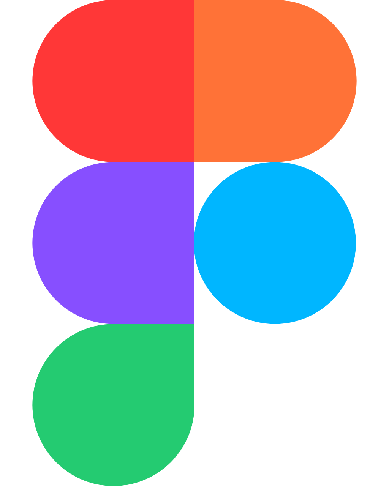

Making complex
things feel simple.
I’m Saranjith. A product designer with an engineer’s mindset and a curiosity that rarely switches off.
01 / HOW I LIKE TO WORK
Understand the messy bits.
Find the useful idea.
Make it real.
A designer.
An engineer.
Always curious.
From Trivandrum to Toronto, with a few interesting turns along the way.
I started in software engineering, then moved closer to the people using the things we build. I bring 15+ years of experience across Product Design and Software Engineering to questions of flow, structure, usability, and interaction.
Today, I work in Product Design at BeyondTrust, focusing on complex enterprise cybersecurity software, primarily Endpoint Privilege Management. I contribute to the design system and work closely with UX Research, Product Management, and Engineering to make complex workflows easier to understand and use.
Earlier, I established a UX practice at Attinad and led designers and front-end engineers. That experience, together with my engineering background, keeps me close to both the big picture and the details of making it work.
Beyond the screen: photography, music, and a lasting connection to Kerala. The interests change the pace; the curiosity stays.
The longer story on LinkedInFrom first thought
to working detail.
A few of the tools I use to design, explore, collaborate, and build.

Figma- Design & prototypingInterfaces, interaction flows, and reusable design systems.
- Claude Code & Design
- Exploration & makingExploring design ideas and bringing prototypes into code.
- Miro
- Collaboration & brainstormingA shared space to map ideas and work through problems together.
- Atlassian Jira & Confluence
- Project managementPlanning work, documenting decisions, and keeping context connected.
- GitHub
- Code & collaborationVersioning projects and collaborating on implementation.
Have something
in mind?
A complex product, a small experiment,
or just a good conversation about design.